기계정비기능사 (2003-07-20 기출문제)
1과목: 임의구분
1. 아래 그림은 고장의 종류 중에서 시간과 손실금액의 관계를 나타낸 것이다. 어떤형의 고장인가 ?
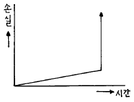
- 성능 저하형
- 기능 정지형
- 초기 고장형
- 조작 미숙형
(정답률: 70%)

2. 고장은 초기고장, 우발고장, 마모고장이 있는데 우발고장의 원인과 대책은 무엇인가?
- 설계상 및 제작상 실수 - 초기 유동관리 철저
- 설비의 수명 - 예방정비
- 제작상 실수 - 정확한 운전조작
- 운전조작상 실수 - 정확한 조작
(정답률: 82%)
3. 비틀어 넣은 볼트가 밑부분에서 부러져 있을 경우에 부러진 볼트를 빼내는 공구는?
- 스패너(Spanner)
- 망치(Hammer)
- 스크루 엑스트렉터(Screw extractor)
- 렌치(Wrench)
(정답률: 91%)
4. 부하시간 200시간/월, 정상가동시간 160시간/월 이라 하면 설비가동율은 얼마인가?
- 80%
- 81%
- 82%
- 83%
(정답률: 88%)
5. 다음 그림과 같은 단면도는?
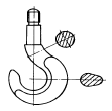
- 전단면도
- 반단면도
- 계단단면도
- 회전단면도
(정답률: 88%)
6. 납선 또는 동선을 부품의 곡선부분에 따라 굽힌후 납선 또는 동선의 윤곽을 따라서 종이위에 연필로 스케치하는 방법은?
- 프리이핸드에 의한 방법
- 프린트하는 방법
- 모양(본)을 뜨는 방법
- 카메라를 사용하는 방법
(정답률: 86%)
7. 도면의 치수는 가급적 어느 곳에 기입하여야 하는가?
- 평면도
- 정면도
- 측면도
- 저면도
(정답률: 89%)
8. 스퍼어 기어를 제도할 때 이끝높이는 무엇과 같게 하는가?
- 모듀울
- 이뿌리높이
- 원주피치
- 클리어런스
(정답률: 57%)
9. 웜 휠의 측면도 제도시 이뿌리원은 무슨 선으로 표시하는가?
- 굵은 실선
- 가는 실선
- 은선
- 도시하지 않는다
(정답률: 57%)
10. 나사 체결용 공구 중 입의 크기를 조절할 수 있는 스패너는?
- 양구 스패너
- 훅 스패너
- 편구 스패너
- 멍키 스패너
(정답률: 81%)
11. 환봉 ø 200, 길이 300㎜인 중량물을 줄걸이 하려고 한다. 적정한 와이어 로프 지름을 계산하면 얼마인가? (단, 비중 7.85, 줄수 3본, 줄걸이 각도 60° 안전계수 8, 하중변환상수 1.155일 때 )
- ø 4
- ø 6
- ø 8
- ø 12
(정답률: 67%)
12. 주휴 2일제라하고 가동일을 20일로 하였을 때 1개월당 설비의 가동율은 얼마인가?
- 22%
- 44%
- 68%
- 72%
(정답률: 52%)
13. 단면 부분을 해칭(Hatching)할 때 이에 쓰이는 선에 대하여 설명한 것중 틀린 것은?
- 제작도면에 있어서 단면에는 해칭을 하지 않는 것이 원칙이다.
- 해칭을 할 경우에는 재질에 관계없이 3-4㎜정도의 등 간격을 두고 사선으로 긋는다.
- 해칭선은 가는 실선이다.
- 단일 부품일 경우에는 수평선에 대하여 45° 의 경사로 해칭한다.
(정답률: 50%)
14. 나사의 부위와 선의 굵기 표시가 잘못 연결된 것은?
- 수나사의 바깥지름 - 굵은 실선
- 암나사의 골지름 - 가는 실선
- 수나사의 불완전 나사부의 골을 나타내는 선 - 굵은 실선
- 완전나사부와 불완전 나사부의 경계를 나타내는 선 - 굵은 실선
(정답률: 57%)
15. 신뢰도를 R(t), 불신뢰도를 F(t), 고장밀도함수를 f(t)라 할때 고장률 λ (t)는?
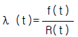
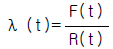
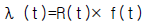
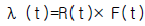
(정답률: 56%)
16. 다음 심벌이 나타내는 뜻은?
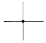
- 도선의 교차
- 도선의 단락
- 도선의 분기
- 도선의 단자
(정답률: 92%)
17. 다음 중 설비검사에 의해서 계획적으로 하는 수리공사는?
- 돌발수리공사
- 사후수리공사
- 예방수리공사
- 정기수리공사
(정답률: 49%)
18. 재고관리 면에서 본 정량 발주 방식에 적합한 품목은 어느 것인가?
- 비교적 단가가 저렴하고 한번에 소량 보충하는 것.
- 용도의 공통성이 높고 합계로서 소비량이 안정 되어있는 것.
- 납기가 장기(長期)인것.
- 수요 예측이 용이하고 긴급 입수가 필요없는 것.
(정답률: 66%)
19. 설비 효율을 저해하는 6대 로스(loss)에 속하지 않은 것은?
- 고장로스
- 재료로스
- 일시정체로스
- 속도로스
(정답률: 75%)
20. 설비관리의 조직 계획에 관한 설명이 올바르지 않은 것은?
- 설비를 효과적으로 활용할 수 있도록 해야 한다
- 구성원을 능률적으로 조절할 수 있고 합리적인 조직이어야 한다
- 효율적인 설비관리를 위해서는 환경의 변화에 순응할 수 있어야 한다
- 전문적인 기술 습득과 발전을 위해 혼자만의 정보를 가져야 한다.
(정답률: 89%)
2과목: 임의구분
21. 표에서 ①은 조업시간 ②는 부하시간 ③은 무부하시간 ④는 기타시간 ⑤는 정미가동시간 ⑥은 정지시간을 나타내고, ① = ② + ③ + ④, ② = ⑤ + ⑥을 나타낸다. 다음 중 시간가동율을 나타내는 식은?
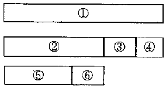
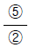
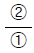
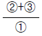
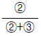
(정답률: 64%)
22. 다음은 치수선의 표시방법에 대한 설명이다. 틀린 것은?
- 치수선은 0.25mm이하의 가는 실선으로 그린다.
- 치수선은 될 수 있는 대로 다른 치수선과 만나지 않도록 그어야 한다.
- 많은 치수선을 평행하게 그을 때에는 서로 같은 간격이 되지 않도록 한다.
- 치수선은 외형선과 너무 가까우면 치수를 읽기 곤란하므로 외형선에서 10∼15mm정도 띄어서 긋는다.
(정답률: 72%)
23. 스케치 할 부품을 직접 용지 위에 대고 굴곡부위를 따라 그리는 방법은?
- 프린트법
- 프리핸드법
- 모양뜨기법
- 카메라 촬영법
(정답률: 83%)
24. 제도 용지의 세로와 가로의 비는 얼마인가?
- 1 : 2
- 2 : 1
- √2 : 1
- 1 : √2
(정답률: 68%)
25. 관 이음의 도시 기호 중 턱걸이 형에 해당 하는 것은?
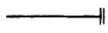
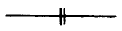
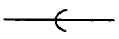
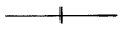
(정답률: 77%)
26. 보기 그림의 화살표 방향을 정면으로 하였을 경우 정면도로 맞는 것은?
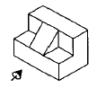
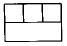
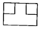
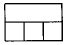
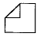
(정답률: 87%)
27. 도면에서 각도의 단위를 나타내는 설명으로 맞지 않은 것은?
- 각도의 단위는 도 (° )를 사용한다
- 필요에 따라서 분 (´ )의 단위도 사용할 수 있다
- 필요에 따라서 초 (˝ )의 단위도 사용할 수 있다
- 각도를 라디안의 단위로 나타낼 때에는 그 단위 기호(rad)를 기입하지 않는다
(정답률: 91%)
28. 스케치의 공구 중에서 분해, 조립 공구가 아닌 것은?
- 스패너
- 드라이버
- 피치게이지
- 플라이어
(정답률: 86%)
29. 그림에서 중앙의 정면도에서 나타낸 단면 A-A 는 어떤 단면인가?
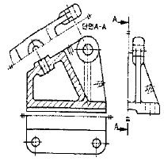
- 반 단면
- 온 단면(전 단면)
- 계단단면
- 회전 도시단면
(정답률: 66%)
30. 평벨트 풀리를 도시할 때 정면도 선택으로 가장 옳은 것은?
- 축 방향의 투상
- 축 직각 방향의 투상
- 어느쪽 방향이든 상관 없다.
- 축과 경사 방향
(정답률: 80%)
31. 유압유의 성질이 아닌 것은?
- 비열이 클것
- 10% 희석되어도 유압유와 적합성이 있을 것
- 비점이 높을 것
- 비중이 클 것
(정답률: 60%)
32. 유압장치 및 유압유를 보호하기 위해 유지되어야 할 작동유의 적정 온도는?
- -10℃ ∼ 0℃
- 0℃ ∼ 20℃
- 30℃ ∼ 55℃
- 60℃ ∼ 80℃
(정답률: 76%)
33. 평형형에 비해 불평형형 베인 펌프로만 될 수 있는 특성은?
- 자동 안전 장치 가동
- 소형 고압형 펌프
- 베어링 수명의 연장
- 가변형 펌프 제작
(정답률: 68%)
34. 유압 펌프에서 축 토오크를 Tp kg-cm, 축동력을 L 이라 할 때 회전수 n rev/sec 를 구하는 식은?
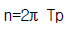
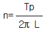
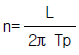
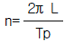
(정답률: 53%)
35. 램형 유압실린더를 기호도로 표시한 것은?
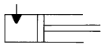
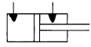
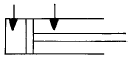
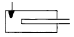
(정답률: 66%)
36. 유량 조정 밸브는 일의 속도를 결정해 주는 것인데 일의 크기를 결정해 주는 밸브는 어느 것인가?
- 압력제어 밸브
- 방향전환 밸브
- 서어보 밸브
- 첵 밸브
(정답률: 80%)
37. 다음 유압기호의 설명중 맞는 것은?
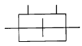
- 한쪽로드형 복동 실린더이다.
- 양쪽로드형 단동 실린더이다.
- 한쪽로드형 단동 실린더이다.
- 양쪽로드형 복동 실린더이다.
(정답률: 77%)
38. 다음 그림은 펌프 직후에 릴리이프 밸브를 장착하여 그 최대 압력을 제한하는 것이다. 이 것에 맞는 회로의 명칭은 어느 것인가?
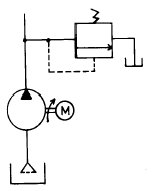
- 시퀀스 회로
- 카운터 밸런스 회로
- 압력 제어 회로
- 감압 회로
(정답률: 73%)
39. 회전속도가 높고 전체 효율이 가장 좋은 펌프는 어느 것인가?
- 축방향 피스톤식
- 베인펌프식
- 내접기어식
- 외접기어식
(정답률: 67%)
40. 압축공기 조정 유닛 구성요소가 아닌 것은?
- 압축공기 휠터
- 압축공기 조절기
- 압축공기 윤활기
- 압축공기 감압밸브
(정답률: 46%)
3과목: 임의구분
41. 피스톤에 공기 압력을 급격하게 작용시켜 피스톤을 고속으로 움직이며, 이 때의 속도 에너지를 이용하는 공기압 실린더는?
- 탠덤형 공압 실린더
- 다위치형 공압 실린더
- 텔레스코프형 공압 실린더
- 임팩트 실린더형 공압 실린더
(정답률: 70%)
42. 그림과 같은 고가탱크에 작용되는 정압을 구하시오 ( 높이 h = 5m ; 유체의 밀도 ρ = 1,000㎏/m3 중력가속도 g = 9.81m/s2 10m/s2 )
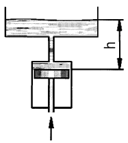
- 5,000 N/m2
- 50,000 Pa
- 5,000 Pa
- 50,000 Kpa
(정답률: 61%)
43. 유압 작동유의 점도가 너무 높을 경우, 유압 장치의 운전에 미치는 영향이 아닌 것은?
- 캐비테이션(Cavitation)의 발생
- 배관 저항에 의한 압력 감소
- 유압 장치 전체의 효율 저하
- 응답성의 저하
(정답률: 60%)
44. 다음의 기호중 공압실린더의 일방향 속도제어에 주로 사용되는 것은?
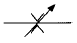
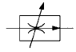
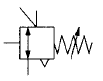
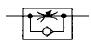
(정답률: 72%)
45. 다음의 공압 압력 제어 밸브 기호 명칭 중 가장 옳은 것은?
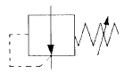
- 릴리프 밸브(relief valve)
- 감압 밸브(reducing valve)
- 시퀀스 밸브(sequence valve)
- 무부하 밸브(unloading valve)
(정답률: 80%)
46. 3개의 공압 실린더를 A+, B+, A-, C+, C-, B-의 순서로 제어하는 회로를 설계하고자 할 때, 신호의 중복(트러블)을 피하려면 몇 개의 그룹으로 나누어야 하는가? (단, A, B, C : 공압 실린더, + : 전진 동작, - : 후진 동작 이다)
- 2
- 3
- 4
- 5
(정답률: 72%)
47. 압축 공기가 두 개의 입구에 동시에 작용 할 때에만 출구에 압축공기가 흐르는 것은?
- 셔틀 밸브
- 2압 밸브
- 체크 밸브
- 급속배기 밸브
(정답률: 72%)
48. 그림에 나타낸 공압 회로와 일치하는 논리는?
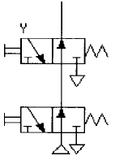
- OR
- AND
- NOR
- NAND
(정답률: 52%)
49. 다음 산업안전 관리규정의 산업안전 표시판에서 방향 표시를 할 필요가 없는 것은?
- 고전압
- 소화기
- 출입구
- 통로
(정답률: 64%)
50. 해머 사용에 대한 안전 수칙이 아닌 것은?
- 자루가 미끄러우면 장갑을 낀다.
- 쐐기가 없는 것은 사용하지 않는다.
- 녹슨 것을 해머질 할 때에는 보호안경을 사용 한다.
- 대형해머 작업시에는 자기의 역량에 알맞게 한다.
(정답률: 76%)
51. 다음 안전에 관한 설명 중 옳지 못한 것은 어느 것인가?
- 동력전달 장치는 쉽게 조작할 수 있도록 하고 진동접촉에 의하여 불시에 정지하는 경우가 없도록 할 것
- 전기 시설의 차단 장치는 감전 및 화재의 발생과 폭발을 방지하기 위하여 적당한 곳에 설치하고 조명을 밝게 할 것
- 발생기식 아세틸렌의 실내 조명은 방폭등을 설치하고 점등 스위치는 옥외에 설치할 것
- 원심 분리기등 고속 회전체는 파열시 사전 예방으로 방벽을 설치하고 항시 회전수를 명시할 것
(정답률: 52%)
52. 통로 및 작업장 기준으로 적합하지 않은 것은?
- 근로자 전용 통로 설치
- 기계와 기계사이는 80cm이상 이격
- 통로면 작업은 거칠지 않게 매끄럽게 함
- 50인 이상 사용시는 2개 이상 비상통로 설치
(정답률: 78%)
53. 프레스의 안전장치에 해당되지 않는 것은?
- 게이트 가드식
- 롤러식
- 손쳐내기식
- 양수 조작식
(정답률: 70%)
54. 높은 장소에서 작업할 때 추락의 원인이 되지 않는 것은 다음 어느 것인가?
- 작업 발판위의 정리 정돈이 불량하다.
- 작업시 신발이 미끄러지기 쉽다.
- 작업 발판의 지지력이 약한 것을 알고 작업하지 않는다.
- 시설의 결함 및 시설의 사용법이 나쁘다.
(정답률: 78%)
55. 감전 예방법으로서 적당치 않은 것은 ?
- 자신감만 있으면 아무나 작업을 한다.
- 전기 기기나 기구는 외함을 접지한다.
- 젖은 손으로는 전기 설비를 만지지 않는다.
- 미숙한 사람은 전기 작업에 종사시키지 말아야 한다.
(정답률: 93%)
56. 산업공장에서 재해발생을 적게하기 위한 방법이 아닌 사항은?
- 통로나 창문 등에 물건을 세워 놓지 않는다.
- 칩은 정해진 용기에 넣는다.
- 소화기 근처에는 어린이들의 손이 닿지 않도록 높은 망을 설치한다.
- 공구는 공구 보관함에 둔다.
(정답률: 91%)
57. 휘발유 및 가연성 가스의 화재는 어느것에 속하는가?
- A급 화재
- B급 화재
- C급 화재
- D급 화재
(정답률: 72%)
58. 안전율이 8, 직경이 10mm인 와이어 로프의 최대인장강도가 40kg/mm2일 때 와이어 로프 1가닥으로 끌어 올릴 수 있는 안전한 무게는 얼마인가?
- 50 kg
- 392.5 kg
- 3200 kg
- 10048 kg
(정답률: 64%)
59. 안전유지와 생산관계와의 거리가 먼 것은?
- 신뢰성 향상
- 기술 축적 향상
- 생산량 과다 할당
- 인간관계 개선
(정답률: 75%)
60. 드릴 머신 작업의 안전에 관한 사항 중 잘못된 것은?
- 드릴의 교환은 회전이 완전히 멈춘 다음 행한다
- 드릴은 사용 후에 점검하도록 한다
- 작은 물건은 바이스를 사용한다
- 드릴을 뽑을 때는 공구를 사용한다
(정답률: 73%)